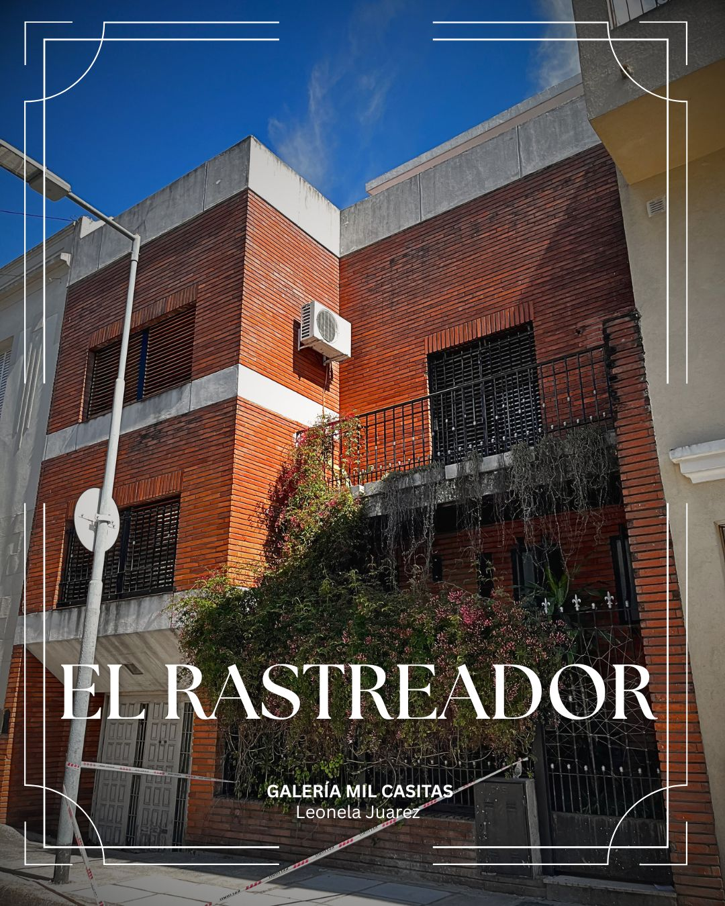

Las Mil Casitas - Conociendo el barrio Liniers
La Galería Las Mil Casitas consta de un recorrido por algunos pasajes del barrio como el Pasaje Amalia, El Rastreador y Los Recuerdos. En ella encontrarán imagenes de algunas casas con descripciones sobre su arquitectura, y elementos culturales importantes de cada pasaje.
Las Mil Casitas es un histórico y pintoresco conjunto residencial ubicado en el barrio de Liniers. Construido a partir de 1922, este enclave nació como un proyecto habitacional obrero inspirado en la arquitectura del norte de Europa.

Recorrido por los Pasajes de la Galería

Pasaje Amalia
Uno de los pasajes más representativos del barrio. Se encuentra escondido en el corazón de la manzana delimitada por Tuyutí, Palmar, Cosquín y Carhué.
Ver pasaje
Pasaje El Rastreador
Homenaje a la figura mítica del rastreador gaucho pampeano popularizada en el Facundo de Sarmiento. Pasaje residencial lindero a la Plaza Sarmiento.
Ver pasaje
Pasaje Los Recuerdos
Testigo de anécdotas populares como el nacimiento de los alfajores Cachafaz y la fundación del tradicional Club Atlético Liniers en la década de 1930.
Ver pasaje